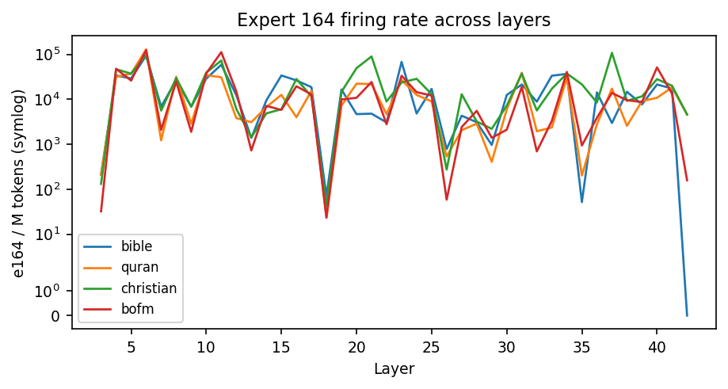
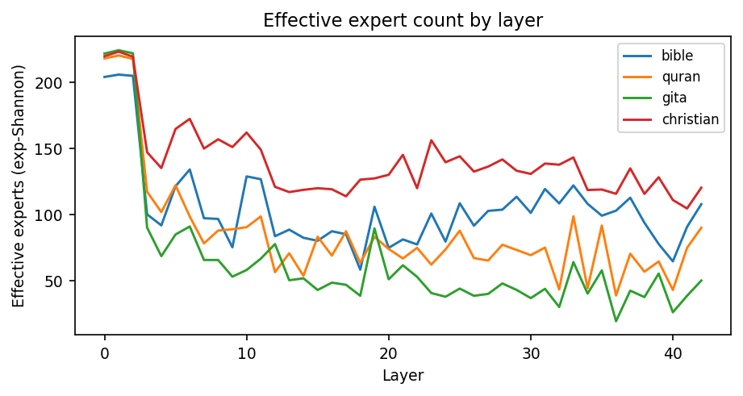
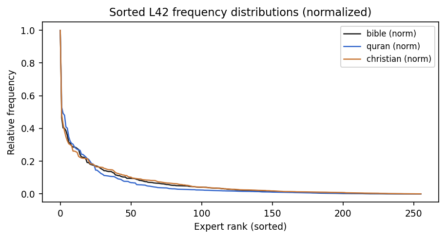
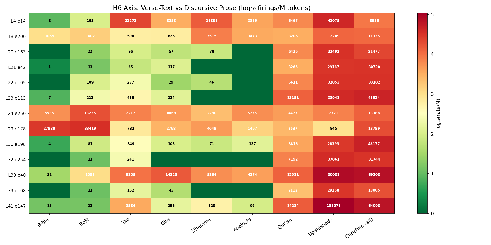
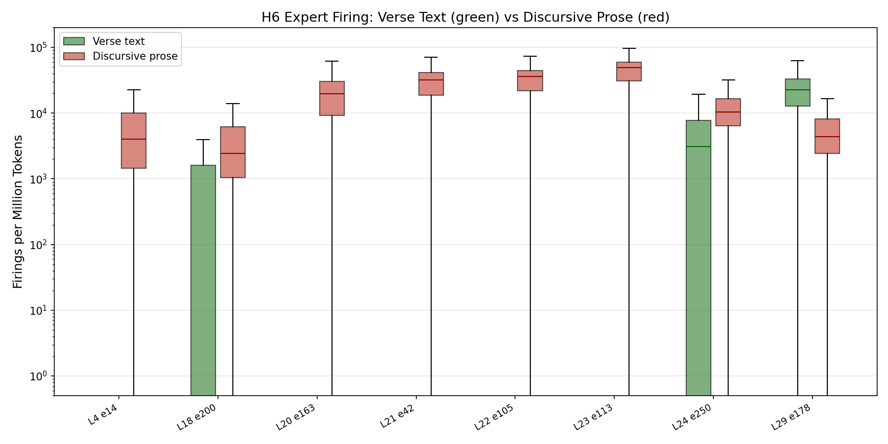
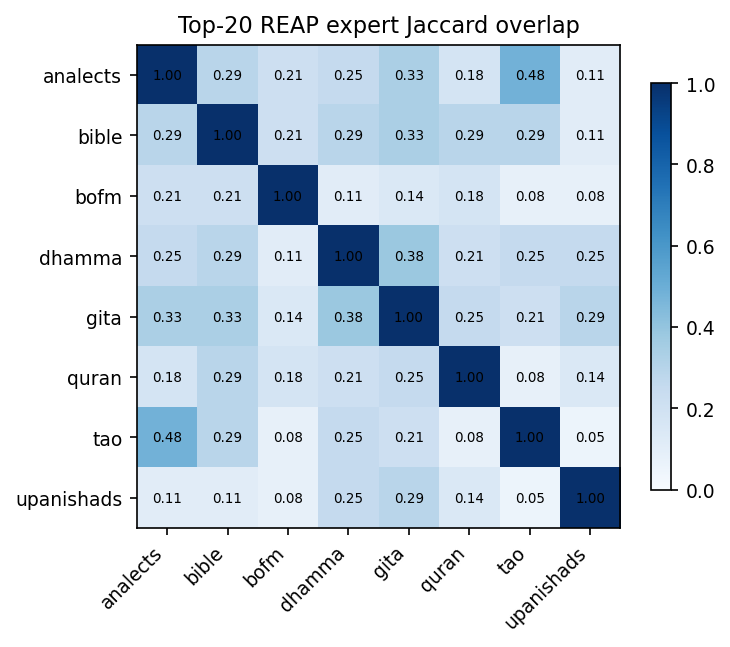

Results and findings
1. Expert 164 across corpora

The raw counts (Exp 8, from core_agg.json / christian_agg.json):
| Corpus | e164 firings | Tokens | Rate /M | Expected under proportional routing |
|---|---|---|---|---|
| KJV Bible | 0 | 1,045,776 | 0.0 | ~24,510 |
| Qur'an | 1,180 | 258,122 | 4,571 | ~6,049 |
| Christian wave-1 | 93,265 | 20,409,440 | 4,565 | ~478,346 |

2. Effective expert count

At layer 40:
| Corpus | Aggregate | Per-sample | Reading |
|---|---|---|---|
| Bhagavad Gita | 26 | 24.3 | most predictable — chant-like repetition |
| Qur'an | 43 | 39.5 | |
| KJV Bible | 65 | 54.1 | |
| Christian literature | 111 | 70 | least predictable — 2,000 years of heterogeneous prose |
The aggregate 111 is inflated by pooling (rare experts firing in one book but not another); per-sample it collapses to 70. The ordering survives at both levels — but it is not a predictability proxy (H3 retracted). The 65 vs 111 gap is a window-length artifact (Bible ~825-token windows vs Christian 16k); at matched draw budget, Bible and Christian are within ~2 units. Against lens-measured predictability, the correlation is positive (Pearson +0.47), not negative as H3 predicted. Call it what it measures: routing concentration.
3. Shared routing backbone

- 15 of the top-20 L42 experts (by frequency) shared between Bible and Qur'an (Exp 8).
- 19 layer-42 experts sit in the top-40 for every corpus.
- Hash-routed L0–2 are corpus-invariant by construction (per-token-ID assignment).
- Sorted-distribution check (Exp 8) rules out a shard-index permutation artifact: cross-corpus expert ID consistency holds for the backbone; e164's rank differs (152 vs 255) in a way a permutation cannot produce.
4. Hard specialists (corrected after audit)
| Expert | Bible (/M) | Dhammapada (/M) | Qur'an (/M) | Christian (/M) | Classification |
|---|---|---|---|---|---|
| L42 e164 | 0.0 | varies | 4,571 | 4,565 | Digit detector (R²=0.77 within Christian). Retracted as religion claim. |
| L41 e34 | 26.7 | 26,631 | 5,888 | 5,114 | Digit detector (R²=0.72). Dhammapada fires it 5× Qur'an. Not a "Qur'an specialist." |
| L34 e33 | 9,670 | 4,517 | 2,298 | 5,371 | Bible fires it highest, 2× Dhammapada. Previous "bible 2.7/M" was a bookkeeping bug. |
None of these are tradition-specific. All three are digit-density experts. The audit protocol: (a) within-Christian OLS on digit fraction → R²; (b) rate in ≤10th-percentile digit slice; (c) full 9-corpus profile; (d) length-matched comparator (BoM at 16k); (e) split-half stability.
4a. The verse-vs-prose axis (H6) confirmed (Exp 1, 4b, 12)



The H6 axis is the study's primary positive finding: a large, digit-independent, length-independent routing axis that separates bare verse-text from discursive prose, cutting across all religious traditions. The 6 anchor experts (L21e42, L22e105, L23e113, L30e198, L32e254, L41e147) fire at up to 163,284/M on commentary prose and ~0 on Bible verse.
4a.1 Confirmed by three independent experiments
| Experiment | Records | Tokens | H6 Rate (M) | Key finding |
|---|---|---|---|---|
| Exp 4 pilot | 30 | 449,326 | 44,822 | Fires on prose context, not verse quotes (10,911× ratio) |
| Exp 4b | 351 | 5,156,659 | 163,284 | r = −0.13 with quote fraction — fires on commentary, not verse |
| Exp 1 | 360 | 613,344 | 59.5 | Translation-invariant (12 translations; KJV/ESV perfect zero), MSG outlier at 1,033/M confirms format detection |
| Exp 12 | 222 | 437,900 | ~135,000 | Digit-independent (1.02× ratio) — NOT a digit artifact |
See narrative §4 for the full 8-tradition table and discussion.
4a.2 e164 digit detector (orthogonal axis)
The original "scripture detector" (L42 e164) is confirmed as a digit detector by Exp 12: 1,453× ratio between with_digits (40,307/M) and digit_stripped (27.7/M) conditions. This is orthogonal to the H6 verse/prose axis. See Exp 12 results.
5. Inter-tradition similarity

Metric caution (Kimi K3): the earlier write-up mixed per-layer top-5 profiles (Bible–BoM 0.539, Bible–Qur'an 0.525, BoM–Qur'an 0.544) with overall top-20 REAP (Bible–BoM 0.212) — two different metrics. The heatmap above is overall top-20 REAP. Directional claim that survives: core-expert overlap is tradition-agnostic (0.52–0.54 across Bible/BoM/Qur'an on the top-5 per-layer metric), and Christian literature diverges most from the Bible.
6. Layer-wise structure
- L0–2 (hash-routed): corpus-invariant by design; any "difference" here is token-frequency composition, not routing decisions.
- Mid layers: the shared backbone dominates; this is where the tradition-agnostic overlap is highest.
- Late layers (39–42): specialists live here — e164 (L42), e34 (L41), e33 (L34) all fire in the topmost scored layers.
reap_score noise-floor artifact that inverts on
expert_frequencies. See retraction 8.2.7. J-lens findings
- Bounded Jacobian: L0 output influence ≈1,268 ≈ 3.9× later layers (L10 371, L20 363, L30 378, L42 320). Reproducible from committed artifacts (Kimi K3 verified). Caveat: 16 random projections only.
- Logit lens: the Genesis 1:2 "Spirit at layer 30" claim was withdrawn — mislabeled position, cherry-picked, uncalibrated readout. No surviving logit-lens headline.